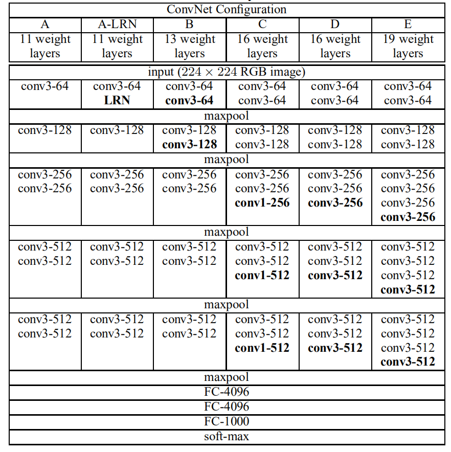
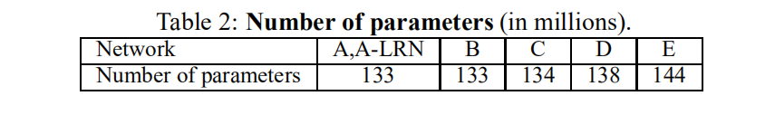

第 4 章 VERY DEEP CONVOLUTIONAL NETWORKS FOR LARGE-SCALE IMAGE RECOGNITION
4.1 ABSTRACT
In this work we investigate the effect of the convolutional network depth on its accuracy in the large-scale image recognition setting. Our main contribution is a thorough evaluation of networks of increasing depth using an architecture with very small (3 × 3) convolution filters, which shows that a significant improvement on the prior-art configurations can be achieved by pushing the depth to 16–19 weight layers. These findings were the basis of our ImageNet Challenge 2014 submission, where our team secured the first and the second places in the localisation and classification tracks respectively. We also show that our representations generalise well to other datasets, where they achieve state-of-the-art results. We have made our two best-performing ConvNet models publicly available to facilitate further research on the use of deep visual representations in computer vision.
4.2 INTRODUCTION
Convolutional networks (ConvNets) have recently enjoyed a great success in large-scale image and video recognition (Krizhevsky et al., 2012; Zeiler & Fergus, 2013; Sermanet et al., 2014; Simonyan & Zisserman, 2014) which has become possible due to the large public image repositories, such as ImageNet (Deng et al., 2009), and high-performance computing systems, such as GPUs or large-scale distributed clusters (Dean et al., 2012). In particular, an important role in the advance of deep visual recognition architectures has been played by the ImageNet Large-Scale Visual Recognition Challenge (ILSVRC) (Russakovsky et al., 2014), which has served as a testbed for a few generations of large-scale image classification systems, from high-dimensional shallow feature encodings (Perronnin et al., 2010) (the winner of ILSVRC-2011) to deep ConvNets (Krizhevsky et al., 2012) (the winner of ILSVRC-2012).
With ConvNets becoming more of a commodity in the computer vision field, a number of attempts have been made to improve the original architecture of Krizhevsky et al. (2012) in a bid to achieve better accuracy. For instance, the best-performing submissions to the ILSVRC-2013 (Zeiler & Fergus, 2013; Sermanet et al., 2014) utilised smaller receptive window size and smaller stride of the first convolutional layer. Another line of improvements dealt with training and testing the networks densely over the whole image and over multiple scales (Sermanet et al., 2014; Howard, 2014). In this paper, we address another important aspect of ConvNet architecture design – its depth. To this end, we fix other parameters of the architecture, and steadily increase the depth of the network by adding more convolutional layers, which is feasible due to the use of very small (3×3) convolution filters in all layers.
As a result, we come up with significantly more accurate ConvNet architectures, which not only achieve the state-of-the-art accuracy on ILSVRC classification and localisation tasks, but are also applicable to other image recognition datasets, where they achieve excellent performance even when used as a part of a relatively simple pipelines (e.g. deep features classified by a linear SVM without fine-tuning). We have released our two best-performing models to facilitate further research.
The rest of the paper is organised as follows. In Sect. 2, we describe our ConvNet configurations. The details of the image classification training and evaluation are then presented in Sect. 3, and the configurations are compared on the ILSVRC classification task in Sect. 4. Sect. 5 concludes the paper. For completeness, we also describe and assess our ILSVRC-2014 object localisation system in Appendix A, and discuss the generalisation of very deep features to other datasets in Appendix B. Finally, Appendix C contains the list of major paper revisions.
4.3 CONVNET CONFIGURATIONS
To measure the improvement brought by the increased ConvNet depth in a fair setting, all our ConvNet layer configurations are designed using the same principles, inspired by Ciresan et al. (2011); Krizhevsky et al. (2012). In this section, we first describe a generic layout of our ConvNet configurations (Sect. 2.1) and then detail the specific configurations used in the evaluation (Sect. 2.2). Our design choices are then discussed and compared to the prior art in Sect. 2.3.
4.3.1 ARCHITECTURE
During training, the input to our ConvNets is a fixed-size 224 × 224 RGB image. The only preprocessing we do is subtracting the mean RGB value, computed on the training set, from each pixel. The image is passed through a stack of convolutional (conv.) layers, where we use filters with a very small receptive field: 3 × 3 (which is the smallest size to capture the notion of left/right, up/down, center). In one of the configurations we also utilise 1 × 1 convolution filters, which can be seen as a linear transformation of the input channels (followed by non-linearity). The convolution stride is fixed to 1 pixel; the spatial padding of conv. layer input is such that the spatial resolution is preserved after convolution, i.e. the padding is 1 pixel for 3 × 3 conv. layers. Spatial pooling is carried out by five max-pooling layers, which follow some of the conv. layers (not all the conv. layers are followed by max-pooling). Max-pooling is performed over a 2 × 2 pixel window, with stride 2.
A stack of convolutional layers (which has a different depth in different architectures) is followed by three Fully-Connected (FC) layers: the first two have 4096 channels each, the third performs 1000-way ILSVRC classification and thus contains 1000 channels (one for each class). The final layer is the soft-max layer. The configuration of the fully connected layers is the same in all networks.
All hidden layers are equipped with the rectification (ReLU (Krizhevsky et al., 2012)) non-linearity. We note that none of our networks (except for one) contain Local Response Normalisation (LRN) normalisation (Krizhevsky et al., 2012): as will be shown in Sect. 4, such normalisation does not improve the performance on the ILSVRC dataset, but leads to increased memory consumption and computation time. Where applicable, the parameters for the LRN layer are those of (Krizhevsky et al., 2012).
4.3.2 CONFIGURATIONS
The ConvNet configurations, evaluated in this paper, are outlined in Table 1, one per column. In the following we will refer to the nets by their names (A–E). All configurations follow the generic design presented in Sect. 2.1, and differ only in the depth: from 11 weight layers in the network A (8 conv. and 3 FC layers) to 19 weight layers in the network E (16 conv. and 3 FC layers). The width of conv. layers (the number of channels) is rather small, starting from 64 in the first layer and then increasing by a factor of 2 after each max-pooling layer, until it reaches 512.
In Table 2 we report the number of parameters for each configuration. In spite of a large depth, the number of weights in our nets is not greater than the number of weights in a more shallow net with larger conv. layer widths and receptive fields (144M weights in (Sermanet et al., 2014)).
Table 1: ConvNet configurations (shown in columns). The depth of the configurations increases from the left (A) to the right (E), as more layers are added (the added layers are shown in bold). The convolutional layer parameters are denoted as “\(conv \left\langle receptive field size \right\rangle - \left\langle number of channels \right\rangle\)”. The ReLU activation function is not shown for brevity.


4.3.3 DISCUSSION
Our ConvNet configurations are quite different from the ones used in the top-performing entries of the ILSVRC-2012 (Krizhevsky et al., 2012) and ILSVRC-2013 competitions (Zeiler & Fergus, 2013; Sermanet et al., 2014). Rather than using relatively large receptive fields in the first conv. layers (e.g. \(11×11\) with stride 4 in (Krizhevsky et al., 2012), or \(7×7\) with stride 2 in (Zeiler & Fergus, 2013; Sermanet et al., 2014)), we use very small \(3 × 3\) receptive fields throughout the whole net, which are convolved with the input at every pixel (with stride 1). It is easy to see that a stack of two \(3×3\) conv. layers (without spatial pooling in between) has an effective receptive field of 5×5; three such layers have a \(7 × 7\) effective receptive field. So what have we gained by using, for instance, a stack of three 3×3 conv. layers instead of a single \(7×7\) layer? First, we incorporate three non-linear rectification layers instead of a single one, which makes the decision function more discriminative. Second, we decrease the number of parameters: assuming that both the input and the output of a three-layer \(3 × 3\) convolution stack has \(C\) channels, the stack is parametrised by \(3(3^2C^2) = 27C^2\) weights; at the same time, a single \(7 × 7\) conv. layer would require \(7^2C^2 = 49C^2\) parameters, i.e. \(81%\) more. This can be seen as imposing a regularisation on the \(7 × 7\) conv. filters, forcing them to have a decomposition through the \(3 × 3\) filters (with non-linearity injected in between).
The incorporation of 1 × 1 conv. layers (configuration C, Table 1) is a way to increase the non-linearity of the decision function without affecting the receptive fields of the conv. layers. Even though in our case the 1 × 1 convolution is essentially a linear projection onto the space of the same dimensionality (the number of input and output channels is the same), an additional non-linearity is introduced by the rectification function. It should be noted that 1 × 1 conv. layers have recently been utilised in the “Network in Network” architecture of Lin et al. (2014).
Small-size convolution filters have been previously used by Ciresan et al. (2011), but their nets are significantly less deep than ours, and they did not evaluate on the large-scale ILSVRC dataset. Goodfellow et al. (2014) applied deep ConvNets (11 weight layers) to the task of street number recognition, and showed that the increased depth led to better performance. GoogLeNet (Szegedy et al., 2014), a top-performing entry of the ILSVRC-2014 classification task, was developed independently of our work, but is similar in that it is based on very deep ConvNets(22 weight layers) and small convolution filters (apart from 3 × 3, they also use 1 × 1 and 5 × 5 convolutions). Their network topology is, however, more complex than ours, and the spatial resolution of the feature maps is reduced more aggressively in the first layers to decrease the amount of computation. As will be shown in Sect. 4.5, our model is outperforming that of Szegedy et al. (2014) in terms of the single-network classification accuracy.
4.4 CLASSIFICATION FRAMEWORK
In the previous section we presented the details of our network configurations. In this section, we describe the details of classification ConvNet training and evaluation.